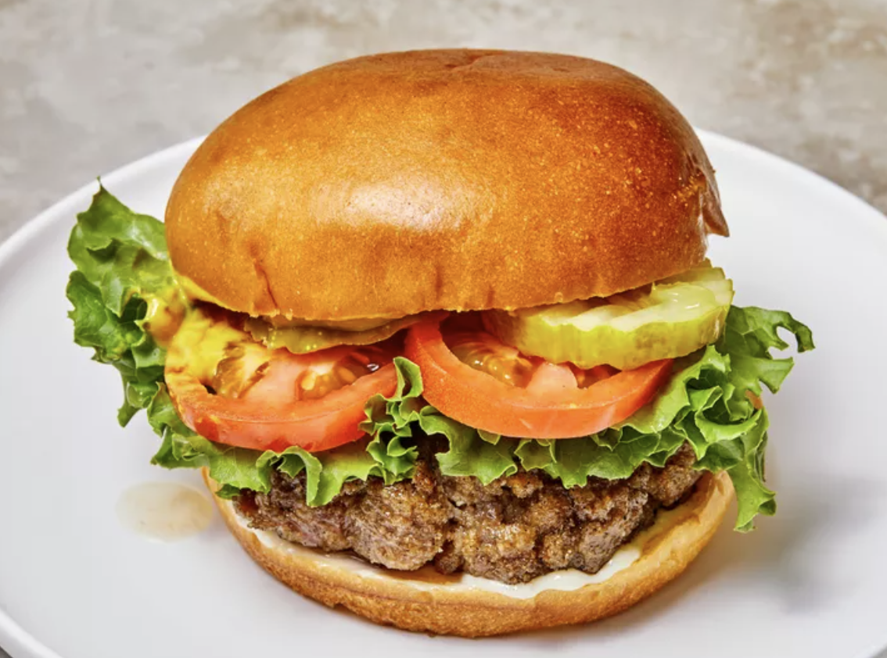

Hamburgers

Description
Elevate your love for comfort food with our mouthwatering hamburger recipe
that promises to redefine your burger experience. Crafted with care and
bursting with flavor, these hamburgers are the epitome of culinary
satisfaction.
Picture a juicy, flame-grilled patty nestled between two toasted buns,
each layer meticulously designed to create a symphony of textures and
tastes that will leave you craving every savory bite.
Ingredients
- 2 pounds ground beef
- 1 egg, beaten
- ¾ cup dry bread crumbs
- 3 tablespoons evaporated milk
- 2 tablespoons Worcestershire sauce
- ⅛ teaspoon cayenne pepper
- 2 cloves garlic, minced
Steps
- Gather all ingredients.
- Preheat a grill for high heat.
-
Mix the ground beef, egg, bread crumbs, evaporated milk, Worcestershire
sauce, cayenne pepper, and garlic in a large bowl using your hands.
- Form the mixture into 8 hamburger patties.
-
Lightly oil the grill grate. Grill patties until browned and no longer
pink, about 5 minutes per side.
- Serve hot and enjoy!